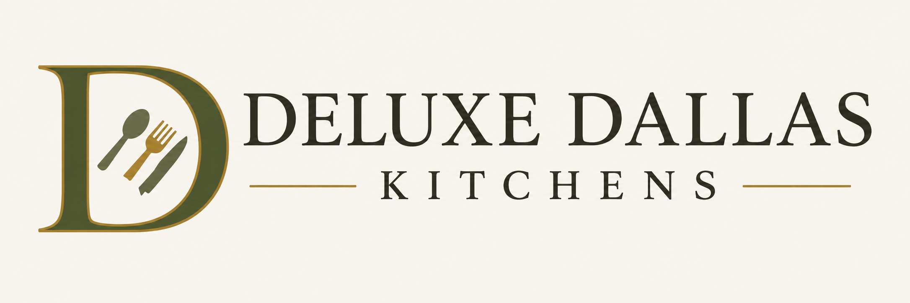

Terms & Referral Disclosure
Updated November 17, 2026
Independent referral service
Deluxe Dallas Kitchens is an independently operated referral website focused on new kitchen remodeling projects in Dallas, Texas. It is not a construction company and is not affiliated with the former Shriver Construction business. The domain name does not identify a contractor you are hiring.
Compensation and provider selection
We may receive compensation for qualifying calls. Compensation may affect which service receives a call. This site does not represent every contractor or provide independent rankings. Connections, availability, estimates, prices, schedules, and results are not guaranteed.
Hiring a contractor
Any agreement for remodeling work is between you and the contractor. Verify identity, applicable licensing, insurance, written estimates, permit responsibilities, payment terms, and warranties directly before hiring. Referral assistance is free; contractor services may carry charges agreed with the provider.
Service disclaimer
Disclaimer: Deluxe Dallas Kitchens is a free service to assist homeowners in connecting with local service providers. All contractors/providers are independent and Deluxe Dallas Kitchens does not warrant or guarantee any work performed. It is the responsibility of the homeowner to verify that the hired contractor furnishes the necessary license and insurance required for the work being performed. All persons depicted in a photo or video are actors or models and not contractors listed on Deluxe Dallas Kitchens.
Illustrations and information
Images illustrate kitchen design possibilities, not completed work by this website or verified projects by referred contractors. General planning information is not a quote or a guarantee of feasibility for your property.